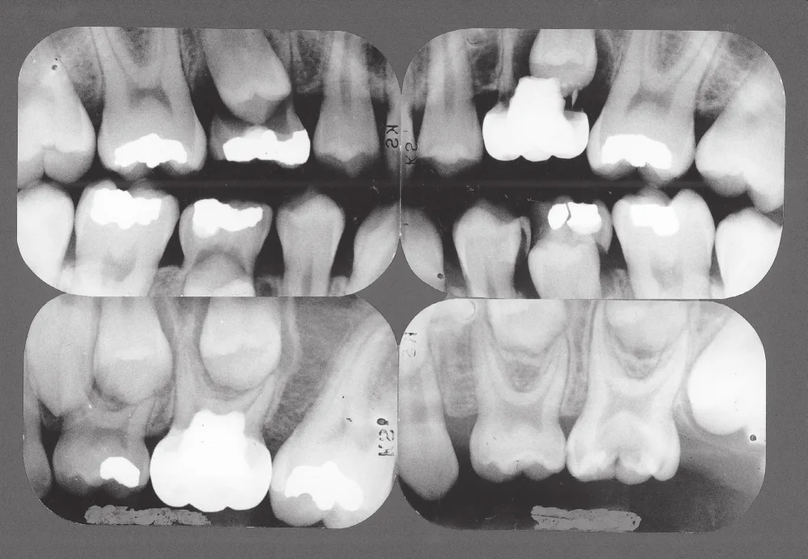

نسخه استخراجشده؛ ترجمه یا تأیید علمی انجام نشده است. وضعیت: captured
۱. تحلیل داخلی — گشادی بادکنکی کانال از داخل. شایعترین شکست پس از پالپوتومی، و معنایش این است که التهاب به پالپ ریشهای رسیده بود.
۲. عفونت پایدار — رادیولوسنسی فورکا که برطرف نمیشود، یا سینوس تراکت عودکننده. یعنی منبع عفونت هنوز داخل دندان است.
۳. تحلیل خارجی پاتولوژیک — نامنظم، ناهماهنگ با سن، همراه با ضایعهی استخوانی. ریشه را سریعتر از روند طبیعی از بین میبرد.
۴. تحلیل کندتر از طبیعی — جهت عکس سه مورد بالا. ریشهی دندان درمانشده دیرتر از قرینهاش تحلیل میرود، افتادنش عقب میافتد و رویش جانشین دائمی به تأخیر میافتد. اینجا کشیدن بهموقع لازم میشود.
هر چهار الگو اغلب بیعلامت شروع میشوند — به همین دلیل پیگیری رادیوگرافیک جایگزین ندارد.

قاعده: درمان بعدی را از وضعیت امروز انتخاب کن، نه با تکرار درمانی که شکست خورده.
ارزیابی را از اول تکرار کن: وضعیت پالپ الان چیست، تاج هنوز قابل بازسازی هست، تحلیل ریشه چقدر پیش رفته، و چقدر تا افتادن طبیعی مانده.
در عمل: شکست پالپوتومی با تحلیل داخلی معمولاً به پالپکتومی یا کشیدن میرسد — تکرار پالپوتومی روی پالپ ریشهای درگیر، همان اشتباه با مادهی دیگر است.
و اگر دندان نزدیک افتادن طبیعی است، کشیدن منطقیتر از درمان پرهزینهای است که عمر کوتاهی خواهد داشت؛ حفظ فضا فقط وقتی لازم است که جانشین هنوز فاصله داشته باشد.